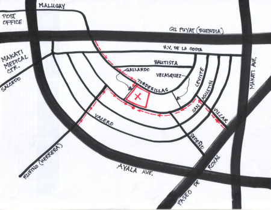

|
Find us |

Click here to see a satellite photo of our dojo.
Click here to see a Google Map of our location. How to get to the Makati Sports/Salcedo Village dojo A) DRIVING YOUR CAR Option 1: Driving eastwards along Buendia (Gil Puyat) towards EDSA, go through Buendia/Ayala intersection (main landmark here: RCBC Plaza on your right), turn right (roughly south) at next traffic light, into Tordesillas. You are now in Salcedo Village. Keep going about 300 meters until you see Jaime Velasquez Park on the right. Turn right on Velasquez St., which borders said park; keep going until the end of this very short street. Turn right on L.P. Leviste. Makati (Sports) Club is the second lot on the right. Parking available at plentiful designated spots along L.P.Leviste and on Tordesillas. As of December 2022, parking is free after 1700 hrs. (Be aware of tow-away times, which Makati authorities tend to amend from time to time.) Option 2: Driving southwards along Paseo de Roxas towards Ayala Ave., turn right onto Villar (the first corner immediately after the Makati Ave. X Paseo de Roxas intersection). Follow Villar for about 200 meters until you hit L.P.Leviste (a T-junction). Turn left onto L.P.Leviste, and 400 meters later (past Velasquez Park on your right) find Makati (Sports) Club main gate on your right. Parking available at plentiful designated spaces along L.P.Leviste and on Tordesillas. B) USING PUBLIC TRANSPORTATION Option 1: Get off your jeepney/bus on the corner of Buendia (Gil Puyat) and Tordesillas. Walk southeastwards along Tordesillas as it goes into Salcedo Village. At approximately 100 meters from Buendia, on the second corner, turn right into Gallardo St. Fifteen meters further on, see the secondary gate of Makati Sports to your left. Option 2: Get off your jeepney/bus on the corner of Ayala Ave. and Herrera St. (now Rufino St.) Follow Herrera/Rufino northwards for about 300 meters until it hits a T-junction; that's L.P.Leviste (formerly Alfaro). Turn right (eastwards) onto L.P.Leviste. Fifty meters further on, see Makati Sports main gate to your left. Option 3: This most direct route, exclusively for pedestrians because it relies on vacant lots and/or open driveways, is approximately 300 meters from Ayala/Paseo de Roxas intersection. From the corner of Ayala Ave. and Paseo de Roxas, make your way to the parking lots behind the Insular Life and Philamlife buildings. Cut thru vacant lots and building driveways, making your way to L..P. Leviste St. Main landmark is the Jaime Velasquez Park on L.P.Leviste. Makati Sports is two lots west of this park, along the same street. ________________________________________ Need more info? Get in touch with us: Telephone 8712-5108 or 09 (office hours, Mon to Fri) Contacts: Frank, Marlene or Barbi E-mail: macaikido@yahoo.com ________________________________________ |